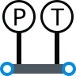
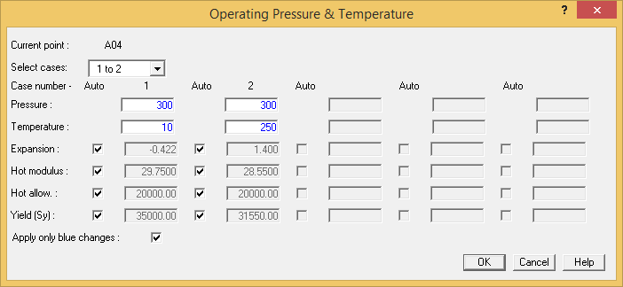
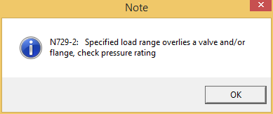
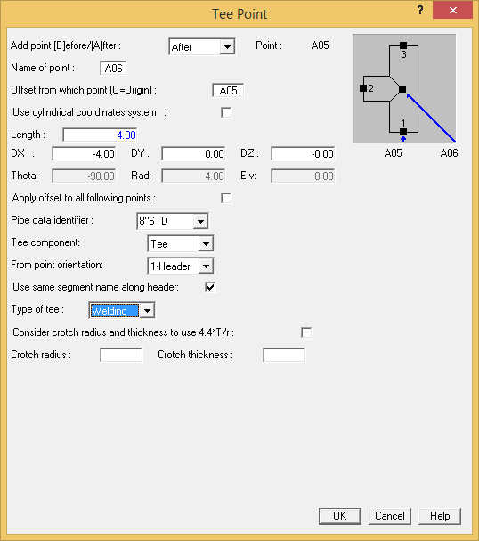
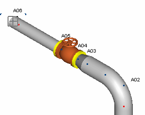
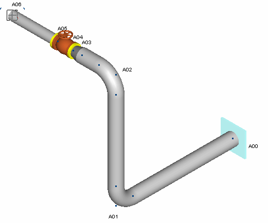

Adding a Tee
Now you will add a tee to this section of the line and finish Segment A. Later in this chapter you will create a second segment that begins at the branch of the tee.
- Click on point A05 at the open end of the valve/flange combination. While holding down the [Shift] button, select point A04.
- You will now specify new pressure/temperature loading conditions starting at point A05. Select
Modify > Properties > Operating P/T. The following dialog is displayed.

- Input the following values:
| Case 1 | Case 2 | |
| Pressure | 300 {2.0} | 300 {2.0} |
| Temperature | 10 {-10} | 250 {120} |
- Tab once and notice that the stress allowable is updated automatically. Press OK to close the dialog.
- A note is displayed to inform you that the load range includes a flange and a valve at A05.

Press OK to accept the note (this note is meant to alert you to the fact that the pressure rating of the valve and flange may need to be updated).
6. Next you will insert a tee from this point. Click on point A05, then select Insert > Piping Component > Tee to display the Tee Point dialog.

- Click the Length field and enter 4 feet {1200}. The Tee element automatically inserts a 4 foot
{1200 mm} run of pipe and prompts the user to input tee information for stress intensification purposes.
- Select Welding from the Type of Tee selection list. The crotch fields are displayed for the welding tee.
| Note: |
The tee types that appear in this list are filtered by AutoPIPE according to the piping code associated with the model. AutoPIPE will automatically compute stress intensification factors (SIF) for each type based on values stored in the component libraries. Select Other from the tee-type list to input user-specified in-plane and out-of- plane SIF's for nonstandard branch connections. |
- Press OK to accept the values and close the dialog. The model appears as shown in the following figure.

- Note that a graphic represents the placement of the tee without completing it. Like the Bend symbol, which required a downstream point to orient the elbow, the tee can only be oriented after its branch location is specified. Later in this chapter you will route components off this branch to create Segment B.
| Note: |
In some cases, users may want to input a tee symbol for SIF purposes without specifying the branch. |
-
.png) Select View >
Zoom-Pan > Zoom Extents to view the extents of the
model. The model appears as shown in the following figure.
Select View >
Zoom-Pan > Zoom Extents to view the extents of the
model. The model appears as shown in the following figure.
